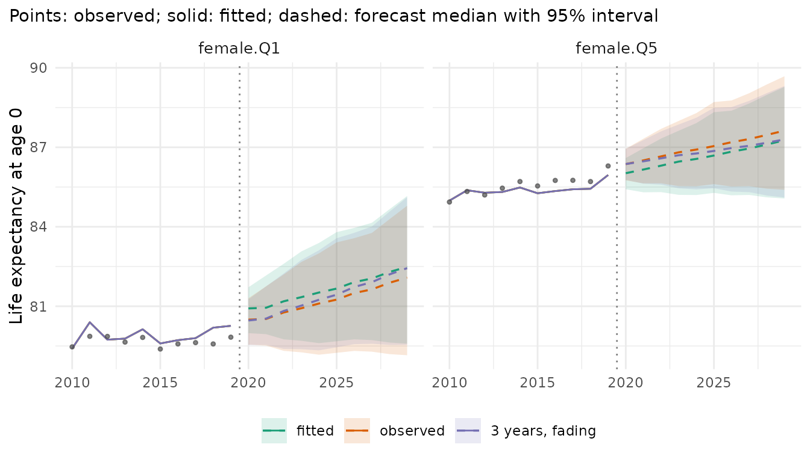
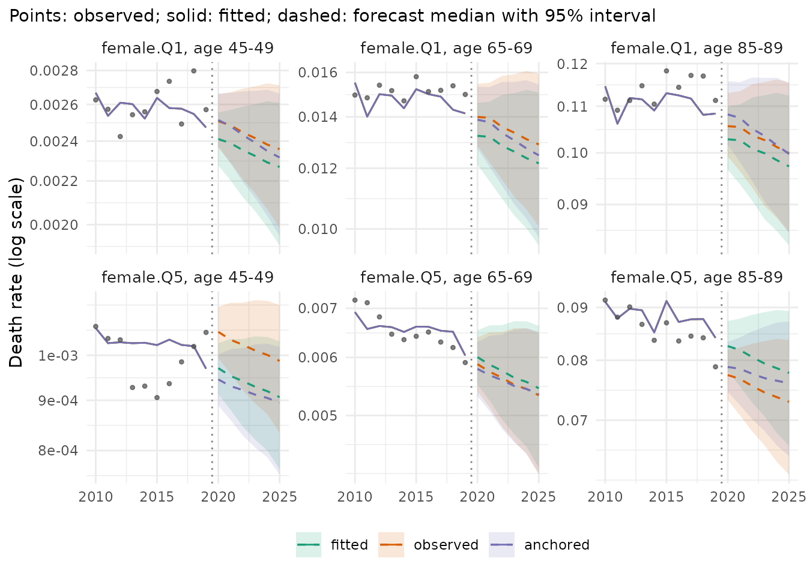
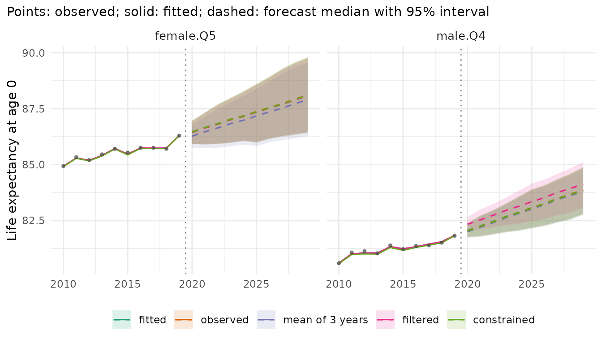

A forecast continues from some level in the last observed year, the jump-off. Most models start from their own fitted rates of that year, which differ from the observed rates: a model with few parameters does not reproduce every age, year and stratum. The difference shows up as a step between the last observed and the first forecast year. This vignette shows when the step is large, the ways of placing the start, and what they change.
library(mortensor)
library(data.table)
x <- mt_data(deaths = ons_data, population = ons_data, by = c("sex", "imd_decile"), age = "age_group",
value = c(deaths = "all_causes", population = "population"))
x <- mt_as_exposure(x, type = "midyear")
x <- mt_group_levels(x, "imd_decile", function(d) paste0("Q", ceiling(as.numeric(d) / 2)), name = "quintile")When the step is large
The step is the distance between the model’s fitted rates and the
observed rates in the last year. Lee-Carter fitted to each stratum
separately has an age pattern and a period index of its own for every
stratum and follows each year closely. Li-Lee (Li and Lee 2005) pools
the quintiles of each sex: they share one trend and deviate from it by a
stationary factor, so the fit of a single quintile in a single year is
looser. mt_jump_off() reports life expectancy at birth in
the last observed year (2019), as fitted, and in the first forecast
year:
fc_lc <- mt_forecast(mt_fit(lee_carter(), x), h = 10, n_draws = 500, seed = 1)
fc_ll <- mt_forecast(mt_fit(li_lee(common_by = "sex"), x), h = 10, n_draws = 500, seed = 1)
merge(mt_jump_off(fc_lc)[, .(label, observed, lee_carter_fitted = fitted)],
mt_jump_off(fc_ll)[, .(label, li_lee_fitted = fitted, li_lee_2020 = forecast)], by = "label")[
, lapply(.SD, function(v) if (is.numeric(v)) round(v, 2) else v)]
#> Key: <label>
#> label observed lee_carter_fitted li_lee_fitted li_lee_2020
#> <char> <num> <num> <num> <num>
#> 1: female.Q1 79.83 79.85 80.26 80.92
#> 2: female.Q2 82.50 82.51 82.74 82.90
#> 3: female.Q3 83.93 83.97 84.01 84.17
#> 4: female.Q4 85.02 85.05 84.88 85.05
#> 5: female.Q5 86.30 86.29 85.95 86.02
#> 6: male.Q1 75.43 75.48 75.84 76.10
#> 7: male.Q2 78.60 78.60 78.74 78.96
#> 8: male.Q3 80.61 80.66 80.56 80.78
#> 9: male.Q4 81.82 81.84 81.75 81.96
#> 10: male.Q5 83.09 83.15 83.02 83.20Lee-Carter reproduces the observed life expectancy of 2019 to a few hundredths of a year. Li-Lee puts women in Q1 0.4 years above the observed value and women in Q5 0.3 years below it: it pulls the quintiles towards their common trend. For women in Q1 its first forecast year then adds another 0.7 years. The step carries into every forecast year.
Starting points
- fitted (default): the forecast continues from the model’s fitted rates of the last year;
-
observed: it continues from the observed rates of
the last year, with all their noise. Lee and Miller (2001) proposed this
jump-off for Lee-Carter: the log ratio of observed to fitted rates of
the last year is added to the log rates of every forecast year.
anchored()applies it to any model;lee_carter(jump_off = "observed")andli_lee(jump_off = "observed")give the same forecasts. -
mean of the last observed years: Stoeldraijer, van
Duin, van Wissen and Janssen (2018) average the observed log rates of
the last
nyears, which reduces the noise of a single year.lee_carter(jump_off = "observed", jump_off_years = n)follows their definition:a[x]is the mean of the observed log rates of these years, and the indexkis 0 at their midpoint. The random walk with drift carries the mean from the midpoint to the last yearT, so the jump-off log rates are the mean plusb[x] d (n - 1) / 2, withdthe drift ofk. The forecast then does not depend on the fitted index of yearT. The paper does not say how the index at the midpoint relates to the fitted index ofT; this reading reproduces its results for French men (see the help oflee_carter()). -
filtered: De Jong and Tickle (2006) write the
Lee-Carter model in state-space form. The vector of log rates of year
tisy[t] = a + b alpha[t] + eps[t], with independent normal errors of the same variancesigma^2at every age, and the index follows a random walk with drift,alpha[t + 1] = delta + alpha[t] + lambda eta[t], where the signal-to-noise ratiolambdascales the innovations. The Kalman filter estimates the index of the last year from the log rates of all years up to it. It weighs the index of the last year alone,z[T](the projection of its observed log rates on the age patternb), against the trend of the earlier years: withlambda = 0the estimate is the value of the linear trend ofzin yearT, and with a largelambdait approachesz[T].lee_carter(jump_off = "filtered")starts the forecast from the rates at this filtered index.aandbare those of the Lee-Carter fit;sigma,lambda,deltaand the level of the index are estimated by maximum likelihood given them. Only the start changes: the forecast keeps the drift and the innovations of the Lee-Carter index. -
constrained: Li, Hardy and Tan (2009) build the
jump-off into the fit.
lee_carter(jump_off = "constrained")fixesa[x]at the observed log rates of the last year andk[T]at 0, and estimatesbandkby maximum likelihood under these constraints (their Appendix 2). The fitted rates of the last year are the observed ones. It needsmethod = "poisson", the default. The paper combines it with negative binomial deaths with one dispersion per age group and a parametric bootstrap,lee_carter(family = "nb", dispersion = "age", jump_off = "constrained", bootstrap = TRUE).
Stoeldraijer et al. (2018) compare six jump-offs for Lee-Carter. Their names, and how to get each in mortensor:
| Stoeldraijer et al. (2018) | mortensor |
|---|---|
| model values (Lee and Carter 1992) | the model itself, for example lee_carter();
anchored(model, decay = 0)
|
| last observed values (Lee and Miller 2001) |
lee_carter(jump_off = "observed");
anchored(model) for any model |
| average 2 years observed | lee_carter(jump_off = "observed", jump_off_years = 2) |
| average 3 years observed | lee_carter(jump_off = "observed", jump_off_years = 3) |
| average 4 years observed | lee_carter(jump_off = "observed", jump_off_years = 4) |
| average 5 years observed | lee_carter(jump_off = "observed", jump_off_years = 5) |
anchored() has further options. years = n
averages the offsets over the last n years: a variant of
the averaged jump-off for any model, specific to this package (reference
unknown). Its offset is the log ratio of the observed to the fitted
deaths of these years, so the forecast also keeps the change of the
fitted rates from these years to the last year.
lee_carter(jump_off = "observed", jump_off_years = n) moves
the mean of the same years to the last year with the drift of
k, as the paper defines it. shrink = TRUE
shrinks the offsets of cells with few deaths towards the mean of their
stratum, and decay lets the offsets fade out over that many
years, so that the forecast returns to the model’s trend; both are
specific to this package. With decay = 4 the weight of the
offset falls linearly from 1 in the first forecast year to 0 in the
fifth. Stoeldraijer et al. recommend such a move from the most accurate
jump-off in the first forecast year to the most robust one by the fifth
(their Appendix 6, without a formula for the weights). Where the last
observed values are the most accurate and the model values the most
robust, anchored(model, decay = 4) does this. The
comparison for Li-Lee includes one package-specific setting:
fc <- list(fitted = fc_ll,
observed = mt_forecast(mt_fit(anchored(li_lee(common_by = "sex")), x), h = 10, n_draws = 500, seed = 1),
"3 years, fading" = mt_forecast(mt_fit(anchored(li_lee(common_by = "sex"), years = 3, decay = 10,
shrink = TRUE), x), h = 10, n_draws = 500, seed = 1))
mt_plot_compare(fc, strata = c("female.Q1", "female.Q5"), periods = c(2010, 2029), data = x)
The solid line is the fitted Li-Lee model, the points the observed life expectancy. The fitted forecast continues from the solid line, above the last points for women in Q1. The other two forecasts start at the observed level. By age, the observed start also carries the noise of single cells, which the package-specific setting averages over three years:
mt_plot_compare(fc, quantity = "rate", ages = c("45-49", "65-69", "85-89"), strata = c("female.Q1", "female.Q5"),
periods = c(2010, 2025))
The starts of Lee-Carter
For Lee-Carter fitted to each stratum, the five starts are options of
lee_carter(). The table gives the observed life expectancy
at birth in 2019 and the median of each forecast in 2020:
lc <- list(fitted = lee_carter(), observed = lee_carter(jump_off = "observed"),
"mean of 3 years" = lee_carter(jump_off = "observed", jump_off_years = 3),
filtered = lee_carter(jump_off = "filtered"), constrained = lee_carter(jump_off = "constrained"))
fit_lc <- lapply(lc, mt_fit, data = x)
fc_lc5 <- lapply(fit_lc, mt_forecast, h = 10, n_draws = 500, seed = 1)
jo <- rbindlist(lapply(names(lc), function(n) mt_jump_off(fc_lc5[[n]])[, start := factor(n, names(lc))]))
dcast(jo[, .(label, e0_2019 = observed, start, forecast)], label + e0_2019 ~ start,
value.var = "forecast")[, lapply(.SD, function(v) if (is.numeric(v)) round(v, 2) else v)]
#> Key: <label, e0_2019>
#> label e0_2019 fitted observed mean of 3 years filtered constrained
#> <char> <num> <num> <num> <num> <num> <num>
#> 1: female.Q1 79.83 79.96 79.94 79.90 80.06 79.94
#> 2: female.Q2 82.50 82.65 82.64 82.53 82.65 82.64
#> 3: female.Q3 83.93 84.13 84.10 84.03 83.92 84.10
#> 4: female.Q4 85.02 85.19 85.16 85.05 85.08 85.16
#> 5: female.Q5 86.30 86.46 86.46 86.27 86.44 86.46
#> 6: male.Q1 75.43 75.65 75.60 75.59 75.53 75.60
#> 7: male.Q2 78.60 78.81 78.81 78.78 78.84 78.80
#> 8: male.Q3 80.61 80.87 80.82 80.77 80.74 80.81
#> 9: male.Q4 81.82 82.06 82.04 82.00 82.34 82.04
#> 10: male.Q5 83.09 83.34 83.29 83.34 83.29 83.28
jo[start == "constrained", all.equal(fitted, observed)]
#> [1] TRUEThe constrained fit reproduces the observed rates of 2019, and with them the observed life expectancy. Its forecasts for 2020 are within 0.01 years of those of the observed start. The mean of three years gives the lowest start in six of the ten strata. For women in Q2, Q4 and Q5 its first forecast year lies within 0.03 years of the observed life expectancy of 2019, and the fitted start adds 0.15 to 0.18 years. The filtered start departs most from the others for men in Q4: 0.52 years above the observed value of 2019 and about 0.3 years above the other starts.
mt_plot_compare(fc_lc5, strata = c("female.Q5", "male.Q4"), periods = c(2010, 2029), data = x)
For women in Q5 the last observed year lies above the years before it. The forecasts that start from that year, or from the fit close to it, run together; the mean of three years starts lower and stays below them. For men in Q4 the filtered forecast runs above the others over the whole horizon: the start changes, the drift stays.
mt_parameters() reports the filter: the filtered index
of the last year (k_filtered) and its standard error
(se_k_filtered, which includes the uncertainty of the level
and the drift), and the maximum likelihood estimates
filter_sigma, filter_lambda and
filter_drift (per year, in the units of k).
The table shortens their names and adds the index k of the
Poisson fit in 2019 and its drift drift_k, which the
forecast keeps:
show <- c(k = "k", k_filtered = "k_filtered", se = "se_k_filtered", drift_k = "drift_k",
drift_filter = "filter_drift", lambda = "filter_lambda", sigma = "filter_sigma")
p <- mt_parameters(fit_lc$filtered)[parameter %in% show & (parameter != "k" | index == "2019")]
p[, name := factor(names(show)[match(parameter, show)], names(show))]
dcast(p, stratum ~ name, value.var = "value")[, lapply(.SD, function(v) if (is.numeric(v)) round(v, 2) else v)]
#> Key: <stratum>
#> stratum k k_filtered se drift_k drift_filter lambda sigma
#> <char> <num> <num> <num> <num> <num> <num> <num>
#> 1: female.Q1 -1.94 -2.20 0.25 -0.27 -0.31 1.58 0.07
#> 2: female.Q2 -2.77 -2.76 0.33 -0.34 -0.35 1.34 0.09
#> 3: female.Q3 -2.88 -2.41 0.37 -0.35 -0.28 1.51 0.10
#> 4: female.Q4 -3.51 -3.23 0.35 -0.41 -0.38 0.80 0.11
#> 5: female.Q5 -3.77 -3.73 0.33 -0.44 -0.43 0.74 0.11
#> 6: male.Q1 -3.07 -2.82 0.26 -0.41 -0.41 1.81 0.07
#> 7: male.Q2 -3.26 -3.33 0.34 -0.43 -0.43 1.35 0.09
#> 8: male.Q3 -3.53 -3.25 0.30 -0.45 -0.41 1.00 0.09
#> 9: male.Q4 -3.50 -4.13 0.25 -0.46 -0.48 0.51 0.09
#> 10: male.Q5 -3.41 -3.29 0.31 -0.45 -0.42 1.18 0.09The estimates of lambda range from 0.51 to 1.81. None is
0, so in every stratum the filter weighs the index of 2019 against the
trend of the earlier years. The drifts of the filter differ from those
of the Poisson index by at most 0.07. For men in Q4 the filtered index
of 2019 lies 0.6 below the Poisson index, more than twice its standard
error. The model of De Jong and Tickle gives the log rates of every age
group the same noise variance, and the Poisson fit weights each cell by
its deaths. Below age 45, the age groups of men in Q4 had 17 to 374
deaths in 2019, those from age 65 several thousand:
round(mt_array(x, "deaths")[, "2019", "male.Q4"])
#> 0 1-4 5-9 10-14 15-19 20-24 25-29 30-34 35-39 40-44 45-49 50-54 55-59
#> 172 17 19 28 57 145 156 191 246 374 640 1134 1579
#> 60-64 65-69 70-74 75-79 80-84 85-89 90+
#> 2199 3397 5589 6980 8945 9158 8598With D deaths, the standard error of an observed log
rate is about 1 / sqrt(D): 0.24 for the 17 deaths at ages
1-4 and 0.01 for the 9,158 deaths at ages 85-89. In the filter these
noisy log rates count as much as those of the old ages.
Which start forecasts better
Stoeldraijer et al. (2018) judge a jump-off by two criteria. A forecast is accurate if its out-of-sample errors in historical data are small: they use the mean absolute error of the forecast life expectancy at 65 one and five years ahead. It is robust if it changes little when one more year of data is added: the standard deviation of the changes of the forecast life expectancy at 65 in 2020 between successive fitting periods. In eight Western European countries the last observed values were the most accurate for most countries and an average of observed years the most robust; the more years averaged, the more robust and the less accurate the forecast. The model values were the most accurate where the model fitted the last years well.
A backtest fits each version to the years up to an origin and scores the following five years:
ll <- li_lee(common_by = "sex")
bt <- mt_compare(list(fitted = ll, observed = anchored(ll),
"3 years, fading" = anchored(ll, years = 3, decay = 10, shrink = TRUE)),
x, origins = 2008:2014, h = 5, n_draws = 200, quantities = "life_expectancy")
#> Warning in report_fit_problems(diagnostics, spec$label, classes): Li-Lee
#> (common by sex): Li-Lee: the AR(1) coefficient of the stratum index is bounded
#> at |phi| = 0.99 in 1 stratum/strata (female.Q4): their deviations from the
#> common trend are close to a unit root and revert very slowly; coherence may not
#> suit them. (diagnostics of 10 stratum/strata of the fit).
#> Warning in report_fit_problems(diagnostics, spec$label, classes): Li-Lee
#> (common by sex): Li-Lee: the AR(1) coefficient of the stratum index is bounded
#> at |phi| = 0.99 in 1 stratum/strata (female.Q4): their deviations from the
#> common trend are close to a unit root and revert very slowly; coherence may not
#> suit them. (diagnostics of 10 stratum/strata of the fit).
#> Warning in report_fit_problems(diagnostics, spec$label, classes): Li-Lee
#> (common by sex): Li-Lee: the AR(1) coefficient of the stratum index is bounded
#> at |phi| = 0.99 in 1 stratum/strata (female.Q4): their deviations from the
#> common trend are close to a unit root and revert very slowly; coherence may not
#> suit them. (diagnostics of 10 stratum/strata of the fit).
#> Warning in report_fit_problems(diagnostics, spec$label, classes): Li-Lee
#> (common by sex): Li-Lee: the AR(1) coefficient of the stratum index is bounded
#> at |phi| = 0.99 in 1 stratum/strata (female.Q4): their deviations from the
#> common trend are close to a unit root and revert very slowly; coherence may not
#> suit them. (diagnostics of 10 stratum/strata of the fit).
#> Warning in report_fit_problems(diagnostics, spec$label, classes): Li-Lee
#> (common by sex): Li-Lee: the AR(1) coefficient of the stratum index is bounded
#> at |phi| = 0.99 in 1 stratum/strata (female.Q4): their deviations from the
#> common trend are close to a unit root and revert very slowly; coherence may not
#> suit them. (diagnostics of 10 stratum/strata of the fit).
#> Warning in report_fit_problems(diagnostics, spec$label, classes): Li-Lee
#> (common by sex): Li-Lee: the AR(1) coefficient of the stratum index is bounded
#> at |phi| = 0.99 in 1 stratum/strata (female.Q4): their deviations from the
#> common trend are close to a unit root and revert very slowly; coherence may not
#> suit them. (diagnostics of 10 stratum/strata of the fit).
mt_score_table(bt, metrics = c("crps", "cov95"))
#> model crps cov95 crps_le cov95_le
#> <fctr> <num> <num> <num> <num>
#> 1: fitted 0.0671 0.810 0.338 0.806
#> 2: observed 0.0714 0.808 0.316 0.834
#> 3: 3 years, fading 0.0661 0.824 0.321 0.831
mt_plot_scores(bt, target = "life_expectancy")
The warnings report that at some origins the deviation of women in Q4
from the common trend of Li-Lee is close to a unit root.
crps scores the log death rates, crps_le life
expectancy at birth in years (lower is better; see “Backtesting and
scores”). The observed start forecasts life expectancy more accurately
than the fitted start (CRPS 0.316 against 0.338 years), because the step
of Li-Lee at the jump-off is large here. It forecasts the rates less
accurately (0.071 against 0.067), because it carries the noise of single
ages and years into every forecast year. The package-specific setting,
which averages the offsets over three years, shrinks them and lets them
fade out, gives the lowest CRPS of the rates (0.066) and a CRPS of life
expectancy close to that of the observed start (0.321 years). The 95%
intervals of all three cover 0.81 to 0.82 of the observed rates.
For Lee-Carter fitted to each stratum, whose step is small here, the
backtest compares the five starts of lee_carter():
bt_lc <- mt_compare(lc, x, origins = 2008:2014, h = 5, n_draws = 200, quantities = "life_expectancy")
mt_score_table(bt_lc, metrics = c("crps", "cov95"))
#> model crps cov95 crps_le cov95_le
#> <fctr> <num> <num> <num> <num>
#> 1: fitted 0.0683 0.793 0.293 0.814
#> 2: observed 0.0788 0.759 0.310 0.803
#> 3: mean of 3 years 0.0727 0.773 0.320 0.777
#> 4: filtered 0.0740 0.749 0.379 0.709
#> 5: constrained 0.0876 0.729 0.318 0.771Lee-Carter reproduces the last observed year closely, so the observed start adds mainly the noise of that year: it forecasts the rates and life expectancy less accurately than the fitted start (CRPS 0.079 against 0.068, and 0.310 against 0.293 years). The other starts are also less accurate than the fitted one on these data. The mean of three years comes closest for the rates (0.073), the constrained fit is the least accurate for the rates (0.088) and the filtered start for life expectancy (0.379 years, with 95% intervals that cover 0.71 of the observed values).
mt_score() gives the measures of Stoeldraijer et al. for
the forecasts of life expectancy at birth: mae is the mean
absolute error of the median forecast, here one and five years ahead,
and measures = "robustness" the standard deviation of the
changes of the median forecast of one target year between consecutive
origins, each of which adds one year of data
(by = c("model", "period"); the paper: life expectancy at
65 in 2020). Below, measures = "revision", a summary of
this package, averages the absolute changes of the median forecast of
each stratum and year over all years forecast from consecutive
origins.
acc <- dcast(mt_score(bt_lc, by = c("model", "horizon"), target = "life_expectancy")[horizon %in% c(1, 5)],
model ~ paste0("mae_", horizon), value.var = "mae")
rob <- mt_score(bt_lc, target = "life_expectancy", measures = "revision")[, .(model, revision)]
merge(acc, rob, by = "model")[, lapply(.SD, function(v) if (is.numeric(v)) round(v, 3) else v)]
#> Key: <model>
#> model mae_1 mae_5 revision
#> <fctr> <num> <num> <num>
#> 1: fitted 0.224 0.617 0.219
#> 2: observed 0.224 0.652 0.223
#> 3: mean of 3 years 0.233 0.644 0.128
#> 4: filtered 0.278 0.741 0.204
#> 5: constrained 0.223 0.662 0.222One year ahead, all starts except the filtered one have mean absolute errors of 0.22 to 0.23 years; five years ahead the fitted start has the smallest (0.617 years). The filtered start is the least accurate at both horizons (0.278 and 0.741 years). The mean of three years is the most robust: its forecasts change by 0.128 years between consecutive origins, those of the other starts by 0.204 to 0.223 years. Compared with the last observed values, it is less accurate one year ahead (0.233 against 0.224 years) and about as accurate five years ahead (0.644 against 0.652 years). This is the trade-off that Stoeldraijer et al. describe: averaging the last years gains robustness and loses accuracy in the first forecast year. The results depend on the data and on the seven origins of this backtest; a backtest on the data at hand shows which start suits them.
Summary
| Start | How | When |
|---|---|---|
| fitted (“model values”) | default of every model | the model fits the last year closely (here Lee-Carter) |
| observed (Lee and Miller 2001) |
anchored(model) around any model;
jump_off = "observed" of lee_carter() and
li_lee()
|
the fit misses the level of the last year (here Li-Lee) |
mean of the last n observed years (Stoeldraijer et
al. 2018) |
lee_carter(jump_off = "observed", jump_off_years = n) |
forecasts that should change little when a year of data is added (here the most robust) |
| filtered (De Jong and Tickle 2006) | lee_carter(jump_off = "filtered") |
a noisy last year of a Lee-Carter fit, with similar noise at all ages (here noisy young ages pull it away) |
| constrained (Li, Hardy and Tan 2009) | lee_carter(jump_off = "constrained") |
the method of the paper, with
family = "nb", dispersion = "age", bootstrap = TRUE
|
| from the most accurate to the most robust start (Stoeldraijer et al. 2018, Appendix 6) |
anchored(model, decay = 4), from the last observed
values to the model values |
the last observed values are the most accurate and the model values the most robust |
| package-specific | anchored(model, years = 3, decay = 10, shrink = TRUE) |
noisy last years, any model; check in a backtest |
mt_jump_off() shows the step of any forecast; a backtest
shows whether another start forecasts better on the data at hand.
References
De Jong P, Tickle L (2006). Extending Lee-Carter mortality forecasting. Mathematical Population Studies 13(1): 1-18. doi:10.1080/08898480500452109.
Lee RD, Carter LR (1992). Modeling and forecasting U.S. mortality. Journal of the American Statistical Association 87(419): 659-671. doi:10.1080/01621459.1992.10475265.
Lee R, Miller T (2001). Evaluating the performance of the Lee-Carter method for forecasting mortality. Demography 38(4): 537-549. doi:10.1353/dem.2001.0036.
Li JS-H, Hardy MR, Tan KS (2009). Uncertainty in mortality forecasting: an extension to the classical Lee-Carter approach. ASTIN Bulletin 39(1): 137-164. doi:10.2143/AST.39.1.2038060.
Li N, Lee R (2005). Coherent mortality forecasts for a group of populations: an extension of the Lee-Carter method. Demography 42(3): 575-594. doi:10.1353/dem.2005.0021.
Stoeldraijer L, van Duin C, van Wissen L, Janssen F (2018). Comparing strategies for matching mortality forecasts to the most recently observed data: exploring the trade-off between accuracy and robustness. Genus 74: 16. doi:10.1186/s41118-018-0041-y.